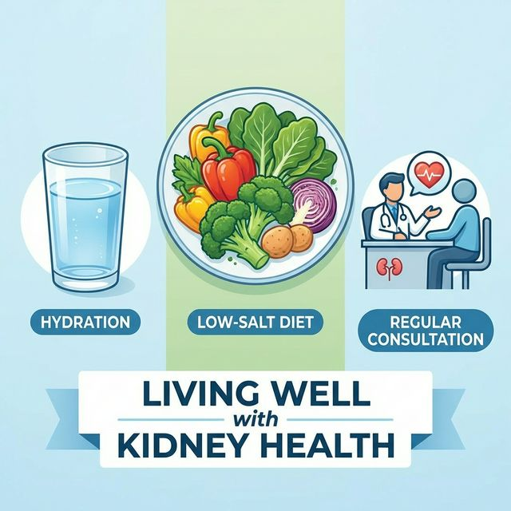

Es la pérdida progresiva e irreversible de la función renal, impidiendo eliminar desechos y líquidos adecuadamente.
PRINCIPALES CAUSAS
- Diabetes
- Hipertensión
- Infecciones urinarias
- Medicamentos nefrotóxicos
Es la pérdida progresiva e irreversible de la función renal, impidiendo eliminar desechos y líquidos adecuadamente.

Acuda al servicio de salud si presenta:
Alumna:
Myriam Machado Arreola
Servicio de Enfermería